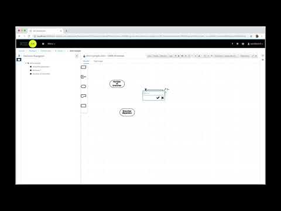

New DMN Editor Preview
The Workbench 7.13.0.Final was released Tuesday, October 16, and this version brings a lot of interesting features and important fixes. One of the highlights is the new DMN Editor as a tech preview feature that is still under development but that you can begin using.
In this article, you’ll learn how to enable the DMN Editor Preview, create a simple DMN model, and execute it via a REST API.
Let’s get started :-)
1) Enabling the Preview editor
Since the feature is available as a tech preview, it’s hidden by default. To enable it, go to Settings -> Roles, select the role you’re logged in (for example, “admin”) and remove the “DMN Designer” exception in the “Permissions” section. Take a look at the steps:
{kind=link}
2) Creating a DMN model
Now that you have the DMN Editor enabled, let’s create a new project: Go to “Projects”, click on “Add asset” and then open the “DMN Preview”. Here you can explore the editor and create your DMN file with your own rules or you can follow the steps provided by this video:

Notice that two input nodes (“Number of branches” and “Branches dispersion”) and one decision node (“Branches distribution”) were inserted. Additionally, we created a Decision Table in the “Branches distribution” node to write some rules.
The DMN file created in the video can be downloaded here.
3) Executing the DMN model
With the DMN file created and saved, it’s time to deploy the DMN model. Go to Projects -> Your project and click on “Deploy” to deploy your project in a KIE Server. Now, access your instance with the “/dmn” suffix, in my case the URL is: http://localhost:8080/kie-server/services/rest/server/containers/DMNSample_1.0.0/dmn.
If you follow the steps above correctly, you’ll see something like this:
{kind=link}
Notice the model-namespace and the model-name values, they will be useful in the next step.
Now, we can make requests to execute rules in our KIE Server instance. See the example below:
curl -u kieserver:kieserver1\! \
-H "content-type: application/json" \
-H "accept: application/json" \
-X POST "http://localhost:8080/kie-server/services/rest/server/containers/DMNSample_1.0.0/dmn" \
-d "{ \
\"model-namespace\" : \"https://github.com/kiegroup/drools/kie-dmn\", \
\"model-name\" : \"dmn-sample\", \
\"decision-name\" : [ ], \
\"decision-id\" : [ ], \
\"dmn-context\" : { \"Branches dispersion\" : \"Province\", \"Number of branches\" : 10 }}"
Replace the URL, the model-namespace and the model-name with your own information, and try it locally. The rules will be executed by the KIE Server with the DMN model you’ve created, and the response will be something like this:
{
"type" : "SUCCESS",
"msg" : "OK from container 'DMNSample_1.0.0'",
"result" : {
"dmn-evaluation-result" : {
"messages" : [ ],
"model-namespace" : "https://github.com/kiegroup/drools/kie-dmn",
"model-name" : "dmn-sample",
"decision-name" : [ ],
"dmn-context" : {
"" : "Medium",
"Branches dispersion" : "Province",
"Number of branches" : 10
},
"decision-results" : {
"_76E55A36-755D-44B4-95A9-A247A05D6D7C" : {
"messages" : [ ],
"decision-id" : "_76E55A36-755D-44B4-95A9-A247A05D6D7C",
"decision-name" : "Branches distribution",
"result" : "Medium",
"status" : "SUCCEEDED"
}
}
}
}
}
This article describes a small part of all the functionality of the DMN Editor. You can write even more complex rules by applying different structures. If you want to read more about the DMN specification, see the DMN Cookbook.
The DMN Editor is still under development. New features and enhancements are to come. Stay tuned ;-)